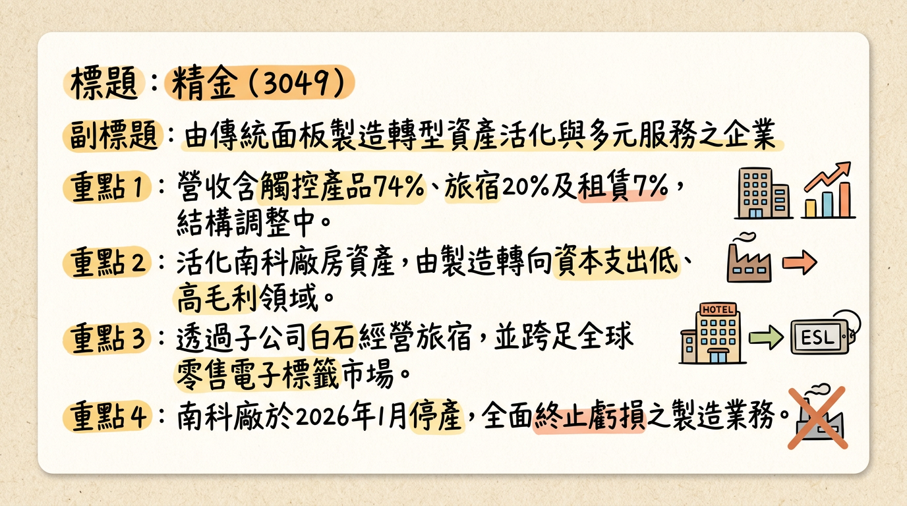
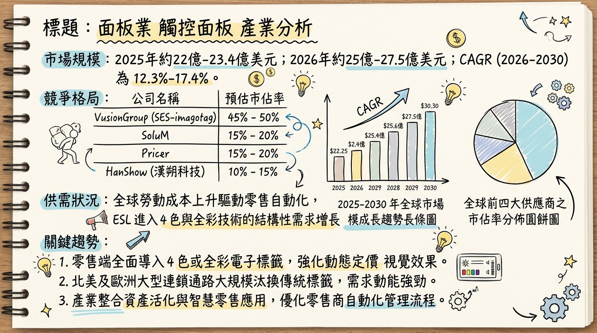
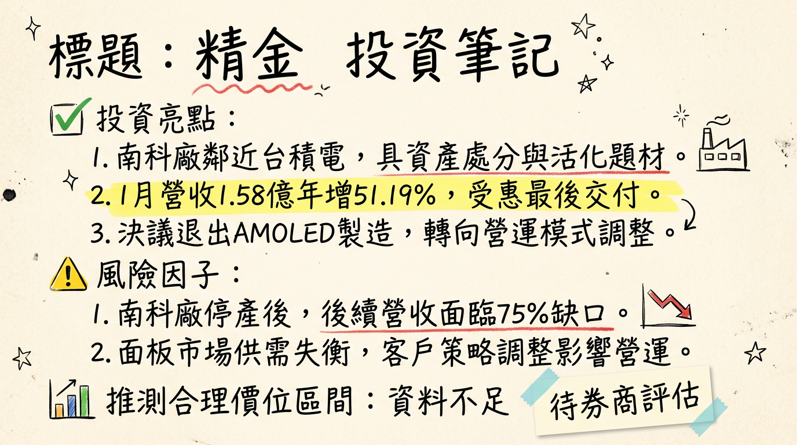

精金科技（原名和鑫光電）正經歷自成立以來最重大的轉型。公司已於 2026 年 1 月正式關閉虧損多年的南科 5.5 代製造產線，全面由傳統觸控面板製造商轉向「資產管理」與「新零售服務」商。
| 業務項目 | 2025 Q3 營收佔比 | 2026 營運展望 |
|---|---|---|
| 觸控產品製造 | 73.65% | 歸零/大幅縮減。2026/01/31 已停產，將不再產生製造虧損。 |
| 旅宿餐飲服務 | 19.76% | 穩健增長。子公司白石經營「瀚寓」系列，提供正向現金流。 |
| 租賃與資產活化 | 6.58% | 核心成長動能。南科廠房出租或出售為 2026 年最大業外收益來源。 |
| 月份 | 營收金額 (億元) | 月增率 (MoM) | 年增率 (YoY) | 備註 |
|---|---|---|---|---|
| 2026/01 | 1.58 | +8.58% | +51.19% | 關廠前訂單最後拉貨 |
| 2025/12 | 1.46 | -4.98% | +13.90% | |
| 2025/11 | 1.53 | -8.49% | -1.62% | |
| 2025/10 | 1.68 | +40.84% | +13.81% | |
| 2025/09 | 1.19 | +8.44% | -18.56% | |
| 2025/08 | 1.10 | +4.39% | -27.61% |
由於精金處於轉型劇烈震盪期，一線券商目前多列為觀察名單，暫無正式目標價報告。以下為研究機構觀點整理：
| 機構名稱 | 目標價 | 評等 | 日期 | 核心觀點 |
|---|---|---|---|---|
| 康和證券 | -- | 中立 (Neutral) | 2025/12/30 | 關廠有助止血，2026 EPS 預估 0.2-0.5 元。 |
| CMoney 研究團隊 | 10.4 | 轉型題材 | 2026/02/26 | 股價突破 10.4 元，觀察南科廠資產處置進度。 |
| MoneyDJ | -- | 利空出盡 | 2026/02/02 | 營收真空期由旅宿/租賃填補，財務體質優化。 |
| 季度 | 毛利率 (%) | 營業利益率 (%) | 稅後淨利率 (%) |
|---|---|---|---|
| 2025 Q3 | -39.92 | -56.01 | -45.25 |
| 2025 Q2 | -35.32 | -51.35 | -52.88 |
| 2025 Q1 | -36.83 | -52.77 | -60.64 |
| 2024 Q4 | -14.31 | -32.95 | -34.03 |
| 2024 Q3 | -40.36 | -56.82 | -73.78 |
| 2024 Q2 | -64.21 | -83.61 | -63.03 |
| 2024 Q1 | -77.64 | -98.71 | -78.76 |
| 2023 Q4 | -163.56 | -200.60 | -195.12 |
| 排名 | 公司名稱 | 國籍 | 市佔率 (估) |
|---|---|---|---|
| 1 | VusionGroup | 法國 | 35% - 40% |
| 2 | Pricer | 瑞典 | 15% - 18% |
| 3 | SoluM | 韓國 | 12% - 15% |
| 4 | Hanshow (漢朔) | 中國 | 10% - 12% |
| 5 | BOE (京東方) | 中國 | 5% - 8% |
| 股票代號 | 公司 | 毛利率 | 2025 前三季 EPS | 產業地位 |
|---|---|---|---|---|
| 8069 | 元太 | 53.2% | 8.17 元 | 全球電子紙材料壟斷者 |
| 6143 | 振曜 | 18%~22% | 3.5 - 4.5 元 | ESL 模組整合大廠 |
| 3049 | 精金 | 負值 | -0.66 元 | 轉型中，資產股屬性轉強 |
2. 南科資產出售的巨大處分利益（市場預估潛在價值近百億）。
3. 轉型 ESL 與旅宿帶來的穩健毛利成長。
2. 資產出售進度不如預期。
* 短線觀點： 股價受資產處置消息驅動，技術面 10.4-11 元為強壓力區。
* 長線觀點： 若南科廠成功出售給半導體大廠，參考資產價值與同業 P/B 評價，合理價格區間預估在 11.5 - 13.5 元。


